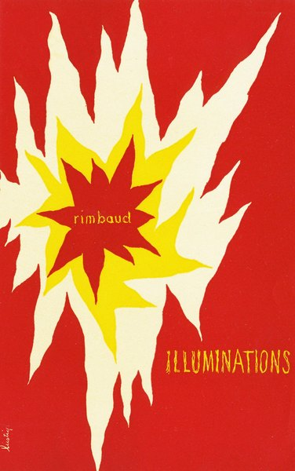
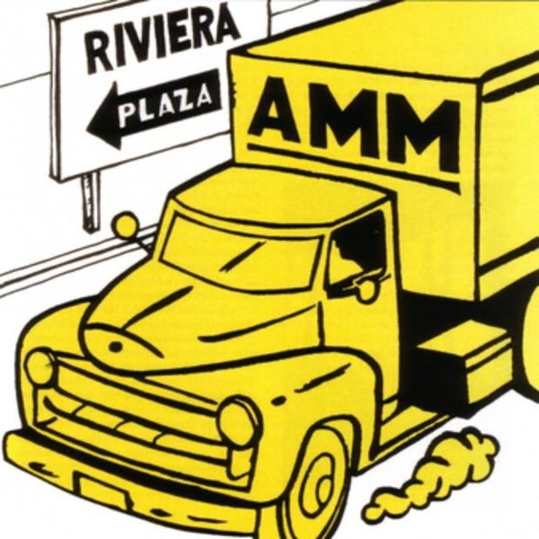
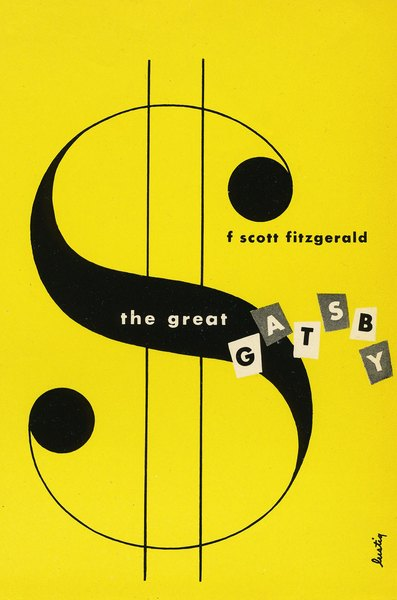
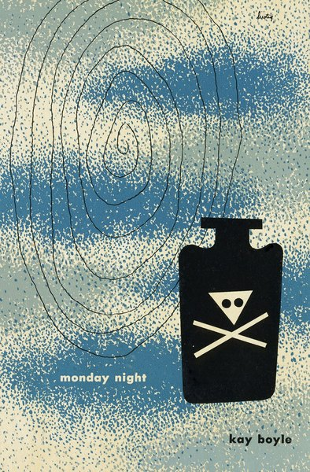
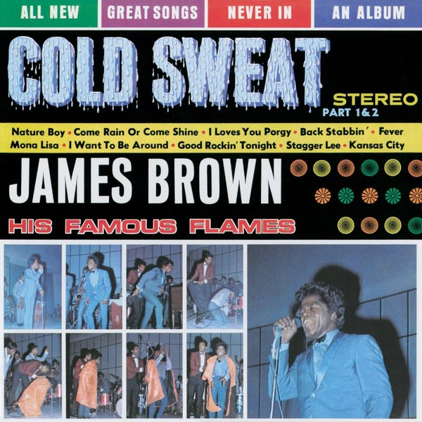
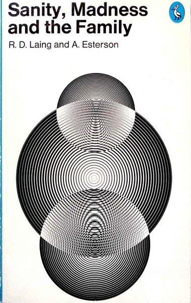

CRVI000452Derek Birdsall - Reconstructing Social Psychology
Cover for Nigel Armistead · Penguin Education · 1972
Cover for Nigel Armistead · Penguin Education · 1972

CRVI000122Shigeo Fukuda - [Poster: figure walking through a red spiral, LOOK series]
Title not established
Title not established

CRVI000327The Marvelettes - Please Mr. Postman
Designer unknown · Tamla · 1961
Designer unknown · Tamla · 1961

CRVI000140Jutaro Itoh - 企業空間のサイン — Corporate Signs (Designing Signs Vol. 2)
Jutaro Itoh and Atsuko Taguchi · Rikuyo-sha
Jutaro Itoh and Atsuko Taguchi · Rikuyo-sha

CRVI000184Designer unknown - Швейныя машины Компаніи Зингеръ — Singer Company Sewing Machines
Russian Singer emblem · advertising poster
Russian Singer emblem · advertising poster

CRVI000576Alvin Lustig - Illuminations
Arthur Rimbaud · New Directions, New Classics NC14 · 1945
Arthur Rimbaud · New Directions, New Classics NC14 · 1945

CRVI000575Alvin Lustig - Selected Poems
Ezra Pound · New Directions, New Classics NC22 · 1949
Ezra Pound · New Directions, New Classics NC22 · 1949

CRVI000440Unknown - After Hitler
Cover for Jürgen Neven-du Mont · Pelican
Cover for Jürgen Neven-du Mont · Pelican

CRVI000587Unknown - Mastering the Expense Account Diet
New York, September 1, 1969 · 1969
New York, September 1, 1969 · 1969

CRVI000599Unknown - 1977: It All Happened Here. Where Else?
New York, December 26, 1977 · 1977
New York, December 26, 1977 · 1977

CRVI000600Unknown - When Was the Last Time You Called Your Mother?
New York, May 7, 1979 · 1979
New York, May 7, 1979 · 1979

CRVI000581Alvin Lustig - Twenty-Third Commencement
Beverly Hills High School · 1940
Beverly Hills High School · 1940

CRVI000586Unknown - This Machine Swallows Buses While Going 60 mph
New York, February 24, 1969 · 1969
New York, February 24, 1969 · 1969

CRVI000446Unknown - The New Men
Cover for C. P. Snow · Penguin
Cover for C. P. Snow · Penguin

CRVI000120Tadanori Yokoo - Tadanori Yokoo — Stedelijk Museum Amsterdam
Exhibition poster, 22.2 t/m 14.4 1974 · 1974
Exhibition poster, 22.2 t/m 14.4 1974 · 1974

CRVI000348Eddie Hazel - Game, Dames And Guitar Thangs
Designer unknown · Warner · 1977
Designer unknown · Warner · 1977

CRVI000282Unknown - Caron's Face Powder
Poster
Poster

CRVI000096Stock, Hausen & Walkman - Organ Transplants Vol. 1
Designer unknown · Hot Air · 1996
Designer unknown · Hot Air · 1996

CRVI000213Unknown - Stare
Reaction GIF · Walton Goggins as Rick Hatchett, The White Lotus · 72 frames, 3.6s loop · 2025
Reaction GIF · Walton Goggins as Rick Hatchett, The White Lotus · 72 frames, 3.6s loop · 2025

CRVI000594Unknown - Money Advisor: How to Borrow Money… Cleverly
New York, January 24, 1972 · 1972
New York, January 24, 1972 · 1972

CRVI000591Unknown - Doctor Feelgood, You Make Me Feel So Good. Are You Sure It's All Right?
New York, February 8, 1971 · 1971
New York, February 8, 1971 · 1971

CRVI000628Barry Blitt - Eustace Vladimirovich Tilley
The New Yorker, March 6, 2017 · 2017
The New Yorker, March 6, 2017 · 2017

CRVI000588Unknown - The Men of Women's Liberation Have Learned Not to Laugh
New York, May 18, 1970 · 1970
New York, May 18, 1970 · 1970

CRVI000106Natori Shunsen - Matsumoto Koshiro as the white bearded Ikkyu
from the supplement to the Collection of Shunsen portraits (Shunsen nigao-e shu) series · color woodblock · 1929
from the supplement to the Collection of Shunsen portraits (Shunsen nigao-e shu) series · color woodblock · 1929

CRVI000312The Human League - Reproduction
Designer unknown · Virgin · 1979
Designer unknown · Virgin · 1979

CRVI000638Tomer Hanuka - Take the L Train
The New Yorker, April 11 2016 · 2016
The New Yorker, April 11 2016 · 2016

CRVI000643Chin Wang, Javier Jaen - The Genius of Bill Belichick
ESPN The Magazine, October 17 2016 · 2016
ESPN The Magazine, October 17 2016 · 2016

CRVI000542Nathalie Kirsheh - The Best of Global Beauty
Allure, May 2021 · 2021
Allure, May 2021 · 2021

CRVI000385Herman Chin Loy - Aquarius Recording Co
Designer unknown · Ltd. · 1975
Designer unknown · Ltd. · 1975

CRVI000331Shorty Long - Here Comes The Judge
Designer unknown · Soul · 1968
Designer unknown · Soul · 1968

CRVI000150Art Blakey's Jazz Messengers - Art Blakey's Jazz Messengers
Designed by Marvin Israel · Atlantic 1278 · 1957
Designed by Marvin Israel · Atlantic 1278 · 1957

CRVI000541Agnethe Glatved - Current Mood: Resilient
Parents, March 2021 · 2021
Parents, March 2021 · 2021

CRVI000618Leo Jung, Trent Davis Bailey - A Kingdom From Dust
The California Sunday Magazine, February 4 2018 · 2018
The California Sunday Magazine, February 4 2018 · 2018

CRVI000112Kiyoshi Awazu - Kiyoshi Awazu Exhibition & Workshop
The 43rd International Design Conference in Aspen · 1993
The 43rd International Design Conference in Aspen · 1993

CRVI000152Cressida - Asylum
Designed by Keef · Vertigo 6360 025 · 1971
Designed by Keef · Vertigo 6360 025 · 1971

CRVI000378Thai Elephant Orchestra /Dave Soldier / Richard Lair - Elephonic Rhapsodies
Designer unknown · Mulatta · 2005
Designer unknown · Mulatta · 2005

CRVI000603Unknown - Your Telephone Survival Guide
New York, April 23, 1984 · 1984
New York, April 23, 1984 · 1984

CRVI000593Unknown - Some Thoughtful Parents Care Enough About Their Kids' Education to Send Them to Public Schools
New York, November 8, 1971 · 1971
New York, November 8, 1971 · 1971

CRVI000235Coldcut - Philosophy
Designer unknown · Ninja Tune · 1993
Designer unknown · Ninja Tune · 1993

CRVI000037Orb - Orbus Terrarum
Artwork by MadArk · Island Records · 1995
Artwork by MadArk · Island Records · 1995

CRVI000210Unknown - Confused
Reaction GIF · Jennifer Saunders as Edina Monsoon · 20 frames, 1.3s loop
Reaction GIF · Jennifer Saunders as Edina Monsoon · 20 frames, 1.3s loop

CRVI000288Utagawa Hiroshige - Eight Shadow Figures Art Print
Poster
Poster

CRVI000242Shazz - Shazz
Designer unknown · Columbia · 1998
Designer unknown · Columbia · 1998

CRVI000017David Chesworth - 50 Synthesizer Greats
Designed by Geronimo Creative Services · 1979
Designed by Geronimo Creative Services · 1979

CRVI000437Unknown - Marx in His Own Words
Cover for Ernst Fischer · Pelican
Cover for Ernst Fischer · Pelican

CRVI000454Peter Bentley - Brideshead Revisited
Cover for Evelyn Waugh · Penguin
Cover for Evelyn Waugh · Penguin

CRVI000609Unknown - First, We Kill All the Computers
New York, July 24, 1995 · 1995
New York, July 24, 1995 · 1995

CRVI000657David Parkins - The Surprising Sophistication of Twitter
Bloomberg Businessweek, November 11–17 2013 · 2013
Bloomberg Businessweek, November 11–17 2013 · 2013

CRVI000059Various - The Philosophy of Sound and Machine
Designed by Third Earth · Applied Rhythmic Technology · 1992
Designed by Third Earth · Applied Rhythmic Technology · 1992

CRVI000582Alvin Lustig - World Inventors Exposition
1947
1947

CRVI000247Marisol - Untitled
Exhibition Poster · 1960-65 · 1960-65
Exhibition Poster · 1960-65 · 1960-65

CRVI000448Derek Birdsall - Socialization
Cover for Kurt Danziger · Penguin Education · 1972
Cover for Kurt Danziger · Penguin Education · 1972

CRVI000145Gentle Giant - Octopus
Designed by Roger Dean · 1972
Designed by Roger Dean · 1972

CRVI000530Tom Alberty - Worth Less
New York, July 17-30, 2023 · 2023
New York, July 17-30, 2023 · 2023

CRVI000453Derek Birdsall - Culture Against Man
Cover for Jules Henry · Penguin Education · 1972
Cover for Jules Henry · Penguin Education · 1972

CRVI000169Chet Baker - Chet Baker & Crew
Designer unknown · Pacific Jazz 1224 · 1956
Designer unknown · Pacific Jazz 1224 · 1956

CRVI000338Eddie Floyd - Knock On Wood
Designer unknown · Stex · 1967
Designer unknown · Stex · 1967

CRVI000205Unknown - Time
Reaction GIF · Matthew McConaughey as Rust Cohle · 31 frames, 3.1s loop
Reaction GIF · Matthew McConaughey as Rust Cohle · 31 frames, 3.1s loop

CRVI000359The Staple Singers - Let's Do It Again (Original Soundtrack)
Designer unknown · Curtom · 1975
Designer unknown · Curtom · 1975

CRVI000061Tom Cameron - Music To Wash Dishes By
Artwork by Tom Cameron · Bathing Records, Inc. · 1982
Artwork by Tom Cameron · Bathing Records, Inc. · 1982

CRVI000433Neutral Milk Hotel - In The Aeroplane Over The Sea
Designer unknown · MGM Records · 1998
Designer unknown · MGM Records · 1998

CRVI000544Unknown - Composed
The New Yorker, September 27, 2021 · 2021
The New Yorker, September 27, 2021 · 2021

CRVI000244Matthias Vogt Trio - Changing Colours
Designer unknown · INFRACom! · 2006
Designer unknown · INFRACom! · 2006

CRVI000073Event Cloak - Life Strategies
Designer unknown · 2017
Designer unknown · 2017

CRVI000383Brainticket - Celestial Ocean
Designer unknown · RCA Victor · 1972
Designer unknown · RCA Victor · 1972

CRVI000097Tonto - It's About Time
Designer unknown · Polydor · 1974
Designer unknown · Polydor · 1974

CRVI000343Walter Jackson - It's All Over
Designer unknown · Okeh · 1965
Designer unknown · Okeh · 1965

CRVI000520Matt Withers - Goldman Sags
The Economist, January 28-February 3, 2023 · 2023
The Economist, January 28-February 3, 2023 · 2023

CRVI000049Jon Appleton - The World Music Theatre Of Jon Appleton
Designed by Ronald Clyne · 1974
Designed by Ronald Clyne · 1974

CRVI000128Koichi Sato - The 6th Iwaki Prefecture Art Festival
1982
1982

CRVI000195Unknown - Desk Flip
Reaction GIF · Panda in an office · 43 frames, 5.2s loop
Reaction GIF · Panda in an office · 43 frames, 5.2s loop

CRVI000426ザ・タイガース - 世界はボクらを待っている
Designer unknown · ポリドール · 1968
Designer unknown · ポリドール · 1968

CRVI000240Sunship - Sunship
Designer unknown · Filter · 1997
Designer unknown · Filter · 1997

CRVI000110Kiyoshi Awazu - The 6th Contemporary Japanese Sculpture Exhibition
第6回現代日本彫刻展 · Ube City Open-Air Sculpture Museum, Tokiwa Park, Ube, Yamaguchi · 1975
第6回現代日本彫刻展 · Ube City Open-Air Sculpture Museum, Tokiwa Park, Ube, Yamaguchi · 1975

CRVI000078Jega - Spectrum
Designer unknown · 1998
Designer unknown · 1998

CRVI000585Unknown - The Future of the Democratic Party
New York, November 4, 1968 · 1968
New York, November 4, 1968 · 1968

CRVI000649Unknown - Speaking Emoji
New York, November 17-23, 2014 · 2014
New York, November 17-23, 2014 · 2014

CRVI000370The Neville Brothers - Neville - Ization
Designer unknown · Black Top · 1984
Designer unknown · Black Top · 1984

CRVI000117Tadanori Yokoo - Are You Ready for Foods?
Advertisement for a Chinese restaurant · 1989
Advertisement for a Chinese restaurant · 1989

CRVI000092Juan Blanco - Musica Electroacustica
Designer unknown · Areito
Designer unknown · Areito

CRVI000350The Brides of Funkenstein - Funk Or Walk
Designer unknown · Warner · 1978
Designer unknown · Warner · 1978

CRVI000635Barry Blitt - Anything But That
The New Yorker, November 14 2016 · 2016
The New Yorker, November 14 2016 · 2016

CRVI000322Skream - Skream!
Designer unknown · Tempa · 2006
Designer unknown · Tempa · 2006

CRVI000299The Residents - The Commercial Album
Designer unknown · Ralph · 1980
Designer unknown · Ralph · 1980

CRVI000248Tetsuya Ishida - Mebae
Exhibition Poster · 1998 · 1998
Exhibition Poster · 1998 · 1998

CRVI000376AMM - AMMMusic 1966
Designer unknown · Elektra · 1967
Designer unknown · Elektra · 1967

CRVI000220James Brown & The Famous Flames - Think!
Designer unknown · King · 1960
Designer unknown · King · 1960

CRVI000473Unknown - Pikettymania
Bloomberg Businessweek, June 2 – June 8, 2014 · 2014
Bloomberg Businessweek, June 2 – June 8, 2014 · 2014

CRVI000296Miles Davis - On The Corner
Designer unknown · Columbia · 1972
Designer unknown · Columbia · 1972

CRVI000553Graeme James - The Horror Ahead
The Economist, March 5-11, 2022 · 2022
The Economist, March 5-11, 2022 · 2022

CRVI000161Kazumasa Nagai - Peace
Designed by Kazumasa Nagai · 1989
Designed by Kazumasa Nagai · 1989

CRVI000537Gail Bichler - How America Spends
The New York Times Magazine, May 23, 2021 · 2021
The New York Times Magazine, May 23, 2021 · 2021

CRVI000012Foodman - Ez Minzoku
Artwork by Ellen Thomas, Keith Rankin · 2017
Artwork by Ellen Thomas, Keith Rankin · 2017

CRVI000578Alvin Lustig - The Great Gatsby
F. Scott Fitzgerald · New Directions, New Classics NC9 · 1945
F. Scott Fitzgerald · New Directions, New Classics NC9 · 1945

CRVI000637Unknown - Yahoo's $8 Billion Black Hole
Bloomberg Businessweek, May 2-8 2016 · 2016
Bloomberg Businessweek, May 2-8 2016 · 2016

CRVI000621Maurizio Di Iorio - The Mutant Future of Food
WIRED, August 2018 · 2018
WIRED, August 2018 · 2018

CRVI000264Enchantment of story-telling – Roman Cieślewicz - Affabulazione
Theatre Poster · 1984 · 1984
Theatre Poster · 1984 · 1984

CRVI000513Oliver Munday - The Choice Is Between Freedom and Fear
The Atlantic, June 2023 · 2023
The Atlantic, June 2023 · 2023

CRVI000058Flying Lotus - Pattern +Grid World
Designed by Theo Ellsworth · Warp Records · 2010
Designed by Theo Ellsworth · Warp Records · 2010

CRVI000179Genesis - Nursery Cryme
Designed by Paul Whitehead · Charisma CAS1052 · 1971
Designed by Paul Whitehead · Charisma CAS1052 · 1971

CRVI000418De La Soul - 3 Feet High And Rising
Designer unknown · Tommy Boy · 1989
Designer unknown · Tommy Boy · 1989

CRVI000428The Chills - Brave Words
Designer unknown · Flying Nun Records · 1987
Designer unknown · Flying Nun Records · 1987

CRVI000069Cluster - Cluster Il
Designer unknown · Brain · 1972
Designer unknown · Brain · 1972

CRVI000109Katsumi Asaba - Bauhaus.
Misawa Design, bauhaus collection · after Lyonel Feininger's woodcut 'Cathedral', 1919 · 2009
Misawa Design, bauhaus collection · after Lyonel Feininger's woodcut 'Cathedral', 1919 · 2009

CRVI000088Matmos - Supreme Balloon
Designer unknown · Matador · 2008
Designer unknown · Matador · 2008

CRVI000335Sam & Dave - Hold On, I'm Comin'
Designer unknown · Stax · 1966
Designer unknown · Stax · 1966

CRVI000523Unknown - It's Good to Be Bad Bunny
Vanity Fair
Vanity Fair

CRVI000053Pierre Schaeffer - Le Trièdre Fertile
Designed by Stephen O'Malley · Philips · 1978
Designed by Stephen O'Malley · Philips · 1978

CRVI000011Cluster - Curiosum
Artwork by Dieter Moebius · Sky Records · 1981
Artwork by Dieter Moebius · Sky Records · 1981

CRVI000324DJ Diamond - Flight Muzik
Designer unknown · Planet Mu · 2011
Designer unknown · Planet Mu · 2011

CRVI000100Sid Bass - From Another World
Designer unknown · Vik · 1956
Designer unknown · Vik · 1956

CRVI000589Unknown - Subway Roulette: The Game Is Getting Dangerous
New York, June 15, 1970 · 1970
New York, June 15, 1970 · 1970

CRVI000382Joel Vandroogenbroeck - Images Of Flute In Nature
Designer unknown · Cenacolo · 1978
Designer unknown · Cenacolo · 1978

CRVI000648Billy Sorrentino - Sex in the Digital Age
WIRED, March 2015 · 2015
WIRED, March 2015 · 2015
CRVI000174The Modern Jazz Quartet - The Sheriff
Designer unknown · Atlantic 1414 · 1964
Designer unknown · Atlantic 1414 · 1964

CRVI000558Ricardo Rey - The Fed That Failed
The Economist, April 23-29, 2022 · 2022
The Economist, April 23-29, 2022 · 2022

CRVI000147The Grassella Oliphant Quartette - The Grass Roots
Designed by Loring Eutemey · 1965
Designed by Loring Eutemey · 1965

CRVI000310Doris Norton - Artificial Intelligence
Designer unknown · Globo · 1985
Designer unknown · Globo · 1985

CRVI000642Luke Hayman, Shigeto Akiyama, Annabel Mehran - Yentl 4Eva
Tablet Magazine, Fall 2016 · 2016
Tablet Magazine, Fall 2016 · 2016

CRVI000679Jackie Nickerson - For the Love of Lupita Nyong'o
Vanity Fair, October 2019 · 2019
Vanity Fair, October 2019 · 2019

CRVI000608Unknown - Is Your Cat Contemplating Suicide?
New York, April 24, 1995 · 1995
New York, April 24, 1995 · 1995

CRVI000574Alvin Lustig - A Room with a View
E M Forster · New Directions, New Classics NC5 · 1943
E M Forster · New Directions, New Classics NC5 · 1943

CRVI000510Albert Ayler - The Last Album
Designed by Woody Woodward Grafix · Impulse! · 1971
Designed by Woody Woodward Grafix · Impulse! · 1971

CRVI000555Gail Bichler - Great Performers: Featuring Michelle Yeoh
The New York Times Magazine, December 11, 2022 · 2022
The New York Times Magazine, December 11, 2022 · 2022

CRVI000019Two Lone Swordsmen - Stay Down
Designed by Haywire, James Woodbourne · Warp Records · 1998
Designed by Haywire, James Woodbourne · Warp Records · 1998

CRVI000375Alan Aldridge - Hare Sitting Up
Cover for Michael Innes · Penguin Crime
Cover for Michael Innes · Penguin Crime

CRVI000261Wiktor Gorka - The Great Escape
Film Poster Designed By Wiktor Gorka · 2018 · 2018
Film Poster Designed By Wiktor Gorka · 2018 · 2018

CRVI000597Unknown - Why Everybody's Talking About Gossip
New York, May 3, 1976 · 1976
New York, May 3, 1976 · 1976

CRVI000572Alvin Lustig - Monday Night
Kay Boyle · New Directions, New Classics NC20 · 1947
Kay Boyle · New Directions, New Classics NC20 · 1947

CRVI000166Soft Machine - Seven
Designed by Roslav Szaybo · CBS 65799 · 1973
Designed by Roslav Szaybo · CBS 65799 · 1973

CRVI000317Farben - Textstar
Designer unknown · Klang Elektronik · 2002
Designer unknown · Klang Elektronik · 2002

CRVI000344James Brown & The Famous Flames - Cold Sweat
Designer unknown · King · 1967
Designer unknown · King · 1967

CRVI000286Herbert Bayer - Bauhaus Exhibition Poster - 50 Years of Bauhaus
Poster
Poster

CRVI000170Kestrel - Kestrel
Designer unknown
Designer unknown

CRVI000297King Tubby - The Roots Of Dub
Designer unknown · Total Sounds / Clock Tower Records Inc. · 1976
Designer unknown · Total Sounds / Clock Tower Records Inc. · 1976

CRVI000579Alvin Lustig - A Streetcar Named Desire
Tennessee Williams · New Directions · 1947
Tennessee Williams · New Directions · 1947

CRVI000529Robert Vargas - André 3000 Is Back!
GQ, November 2023 · 2023
GQ, November 2023 · 2023

CRVI000556Gail Bichler - The Future of Work When No One Wants to Work
The New York Times Magazine, February 20, 2022 · 2022
The New York Times Magazine, February 20, 2022 · 2022

CRVI000430Teenage Fanclub - Bandwagonesque
Designer unknown · Creation · 1991
Designer unknown · Creation · 1991

CRVI000374TLC - Ooooooohhh... On The TLC Tip
Designer unknown · Laface · 1992
Designer unknown · Laface · 1992

CRVI000227Beats International - Let Them Eat Bingo
Designer unknown · Go! Beat · 1990
Designer unknown · Go! Beat · 1990

CRVI000552Thomas Alberty - This Magazine Can Help You Get an Abortion
New York, May 23-June 5, 2022 · 2022
New York, May 23-June 5, 2022 · 2022

CRVI000285Unknown - Heinz Tomato Juice — We're Sorry There Aren't Enough of our kind to go 'round
Advertisement · Fortune magazine · 1935 · 1935
Advertisement · Fortune magazine · 1935 · 1935

CRVI000157Kazumasa Nagai - Exhibition of Graphic Art
Designed by Kazumasa Nagai · 1978
Designed by Kazumasa Nagai · 1978

CRVI000664Unknown - The New Yorker, April 9, 2007
The New Yorker, April 9, 2007 · 2007
The New Yorker, April 9, 2007 · 2007

CRVI000064Mouse On Mars - Dimensional People
Designer unknown · Thrill Jockey · 2018
Designer unknown · Thrill Jockey · 2018

CRVI000439Unknown - Sanity, Madness and the Family
Cover for R. D. Laing and A. Esterson · Pelican
Cover for R. D. Laing and A. Esterson · Pelican

CRVI000447Derek Birdsall - Ideology
Cover for L. B. Brown · Penguin Education · 1972
Cover for L. B. Brown · Penguin Education · 1972

CRVI000449Derek Birdsall - Peasants and Peasant Societies
Cover for Teodor Shanin · Penguin Education · 1972
Cover for Teodor Shanin · Penguin Education · 1972

CRVI000095Martin Davorin Jagodic - Tempo Furioso (Tolles Wetter)
Designer unknown · nova musicha - n. · 1975
Designer unknown · nova musicha - n. · 1975

CRVI000451Derek Birdsall - Creativity
Cover for P. E. Vernon · Penguin Education · 1972
Cover for P. E. Vernon · Penguin Education · 1972